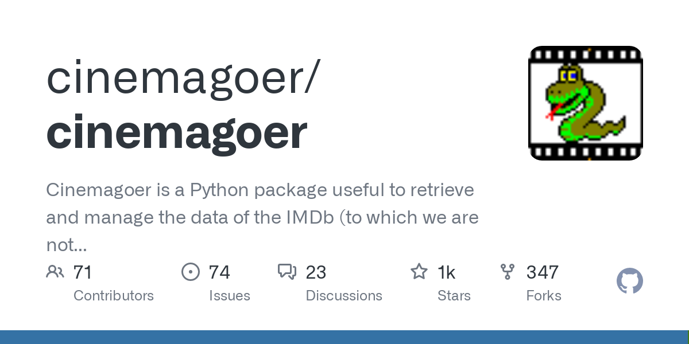

Collection:
Our main data is from the Cornell Movie-Dialogs Corpus, which is a large metadata-rich collection of fictional conversations extracted from raw movie scripts. It includes 220,579 conversational exchanges between 10,292 pairs of movie characters in 617 movies from 1927 – 2009 and the movie metadata includes genres, release year, IMDB rating, and number of IMDB votes of a movie. Another source of information is the Cinemagoer library mainly providing the synopsis, reviews, and intro data for each movie from IMDb, the library provides easy access to diverse information on movies with their IMDb ID.
Limitations:
We have to point out some of the limitations of these data collection. For the Cornell data, the issue is that these movies are relatively out-of-date, which means that they are not recently produced, could not represent what people nowadays think of the film industry. Also, the data is only from 1927 – 2009, relatively short in terms of period. For the Cinemagoer data scraped from IMDb, the issue is that we do not know how the library decides which data to collect which to not. Is it based on which one shows up first on the website? Or is it based on something else like likes or votes for comments? The library also provides multiple versions of information in terms of synopsis and introductions data of a movie, we also do not have access to how the library decide which version go first and we just chose the one appear first when accessing.
